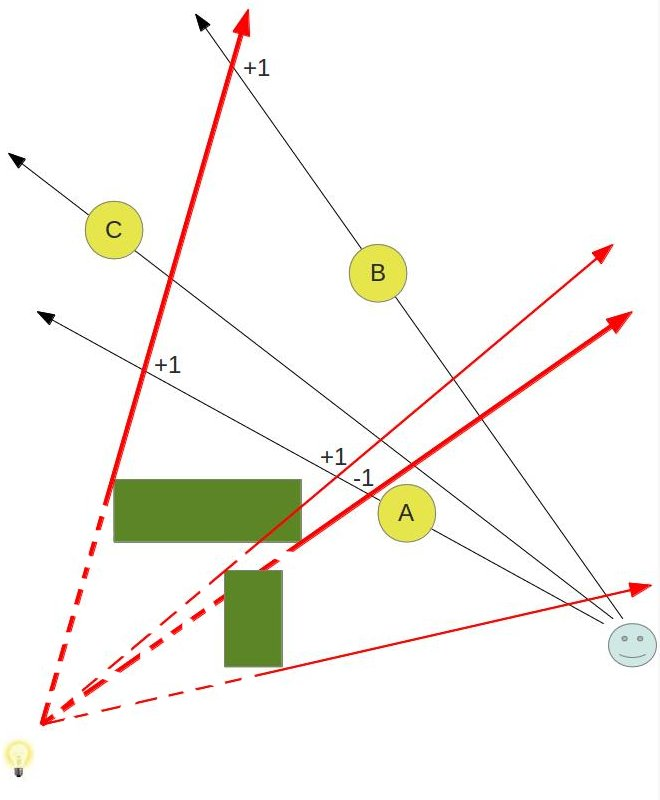
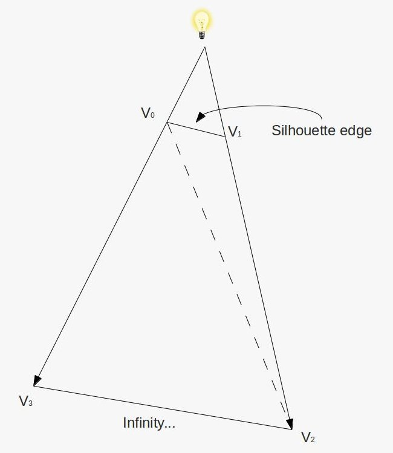
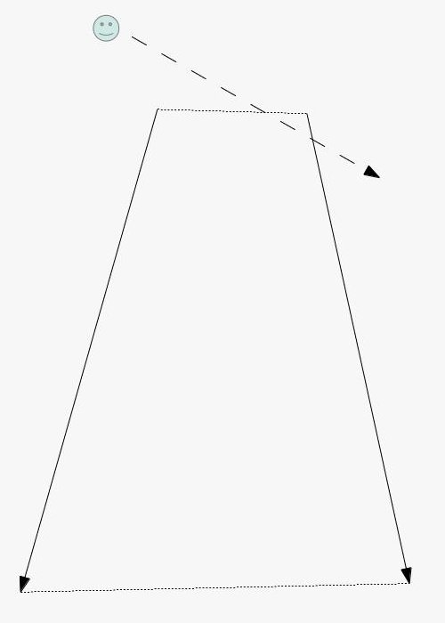
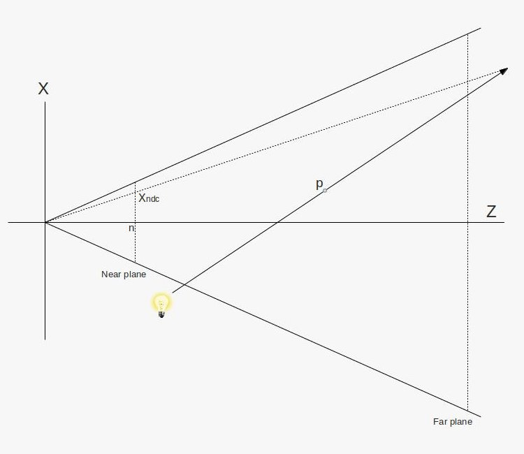
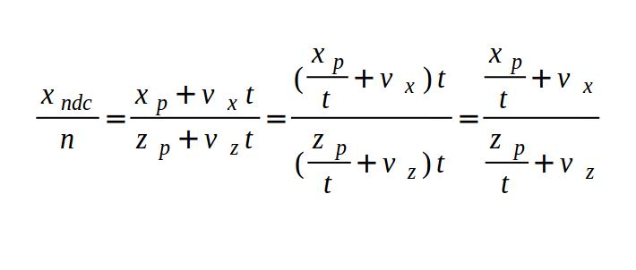
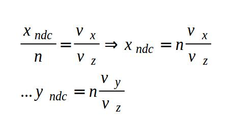

Tutorial 40 - Stencil Shadow Volume
Background
In tutorials 23 & 24 we studied the shadow map technique which is a relatively simple way to get shadows into your 3D world. Shadow maps have a disadvantage when trying to generate a shadow for a point light source. You need a direction vector in order to generate the shadow map and since a point light casts its light all over the place it is difficult to get such a vector. While there are methods to overcome this, they are a bit complex and make the shadow map technique more suitable for spot lights. The Stencil Shadow Volume is an interesting technique that provides a straightforward solution to the problem of point lights. This technique was discovered by William Bilodeau and Michael Songy in 1998 and was popularized by John Carmack in his Doom 3 engine (2002).
If you've followed the tutorials thus far you've actually seen a variation of this technique in our mini series of tutorials on Deferred Shading. With deferred shading we needed a way to block the light influence and we've used a light volume for that purpose. We processed lighting only on stuff within the light volume. Now we are going to do the opposite. We will create a shadow volume and process lighting only on stuff outside of it. Same as in light volume we will use the stencil buffer as a key component of the algorithm. Hence the name - Stencil Shadow Volume.
The idea behind the shadow volume algorithm is to extend the silhouette of an object which is created when light falls upon it into a volume and then render that volume into the stencil buffer using a couple of simple stencil operations. The key idea is that when an object is inside the volume (and therefore in shadow) the front polygons of the volume win the depth test against the polygons of the object and the back polygons of the volume fail the same test.
We are going to setup the stencil operation according to a method known as Depth Fail. People often start the description of the shadow volume technique using a more straighforward method called Depth Pass, however, that method has a known problem when the viewer itself is inside the shadow volume and Depth Fail fixes that problem. Therefore, I've skipped Depth Pass altogether and went directly to Depth Fail. Take a look at the following picture:

We have a light bulb at the bottom left corner and a green object (called an occluder) which casts shadow due to that light. Three round objects are rendered in this scene as well. Object B is shadowed while A & C are not. The red arrows bound the area of the shadow volume (the dashed part of the line is not part of it).
Let's see how we can utilize the stencil buffer to get shadows working here. We start by rendering the actual objects (A, B, C and the green box) into the depth buffer. When we are done we have the depth of the closest pixels available to us. Then we go over the objects in the scene one by one and create a shadow volume for each one. The example here shows only the shadow volume of the green box but in a complete application we would also create volumes for the round objects because they cast shadows of their own. The shadow volume is created by detecting its silhouette (see tutorial 39) and extending it into infinity. We render that volume into the stencil buffer using the following simple rules:
- If the depth test fails when rendering the back facing polygons of the shadow volume we increment the value in the stencil buffer.
- If the depth test fails when rendering the front facing polygons of the shadow volume we decrement the value in the stencil buffer.
- We do nothing in the following cases: depth test pass, stencil test fails.
Let's see what happens to the stencil buffer using the above scheme. The front and back facing triangles of the volume that are covered by object A fail the depth test. We increment and decrement the values of the pixels covered by object A in the stencil buffer which means they are left at zero. In the case of object B the front facing triangles of the volume win the depth test while the back facing ones fails. Therefore, we only increment the stencil value. The volume triangles (front and back facing) that cover object C win the depth test. Therefore, the stencil value is not updated and remains at zero.
Note that up till now we haven't touched the color buffer. When we complete all of the above we render all objects once again using the standard lighting shader but this time we set the stencil test such that only pixels whose stencil value is zero will be rendered. This means that only objects A & C will make it to the screen.
Here's a more complex scene that includes two occluders:
To make it simpler to detect the shadow volume of the second occluder it is marked by thinner red arrows. You can follow the changes to the stencil buffer (marked by +1 and -1) and see that the algorithm works fine in this case as well. The change from the previous picture is that now A is also in shadow.
Let's see how to put that knowledge into practice. As we said earlier, we need to render a volume which is created when we extend the silhouette of an occluder. We can start with the code from the previous tutorial which detects the silhouette. All we need to do is to extend the silhouette edges into a volume. This is done by emitting a quad (or actually, four vertices in triangle strip topology) from the GS for each silhouette edge. The first two vertices come from the silhouette edge and the other two vertices are generated when we extend the edge vertices into infinity along the vector from the light position to the vertices. By extending into infinity we make sure the volume captures everything which lies in the path of the shadow. This quad is depicted in the following picture:
When we repeat this process of emitting quads from all silhouette edges a volume is created. Is that enough? definitely not. The problem is that this volume looks kind of like a truncated cone without its caps. Since our algorithm depends on checking the depth test of the front and back triangles of the volume we might end up with a case where the vector from the eye to the pixel goes through only either the front or back of the volume:
The solution to this problem is to generate a volume which is closed on both sides. This is done by creating a front and a back cap to the volume (the dotted lines in the picture above). Creating the front cap is very easy. Every triangle which faces the light becomes part of the front cap. While this may not be the most efficient solution and you could probably create a front cap using fewer triangles it is definitely the simplest solution. The back cap is almost as simple. We just need to extend the vertices of light facing triangle to infinity (along the vector from the light to each vertex) and reverse their order (else the resulting triangle will point inside the volume).
The word 'infinity' has been mentioned here a few times and we now need to define exactly what this means. Take a look at the following picture:
What we see is a picture of the frustum taken from above. The light bulb emits a ray which goes through point 'p' and continues to infinity. In other words, 'p' is extended to infinity. Obviously, at infinity the position of point p is simply (infinity, infinity, infinity), but we don't care about that. We need to find a way to rasterize the triangles of the shadow volume which means we must project its vertices on the projection plane. This projection plane is in fact the near plane. While 'p' is extended to infinity along the light vector we can still project it back on the near plane. This is done by the dotted line that goes from the origin and crosses the light vector somewhere. We want to find 'Xp' which is the X value of the point where that vector crosses the near plane.
Let's describe any point on the light vector as 'p + vt' where 'v' is the vector from the light source to point 'p' and 't' is a scalar which goes from 0 towards infinity. From the above picture and due to triangle similarities we can say that:
Where 'n' is the Z value of the near plane. As 't' goes to infinity we are left with:
So this is how we find the projection of 'p' at infinity on the near plane. Now here's a bit of magic - turns out that to calculate Xp and Yp according to the above we just need to multiply the vector (Vx, Vy, Vz, 0) (where 'V' is the vector from the light source to point 'p') by the view/projection matrix and apply perspective divide on it. We are not going to prove it here by you can try this yourself and see the result. So the bottom line is that whenever we need to rasterize a triangle that contains a vertex which was extended to infinity along some vector we simply multiply that vector by the view/projection matrix while adding a 'w' component with the value of zero to it. We will use that technique extensively in the GS below.
Code Walkthru
(glut_backend.cpp:83)
glutInitDisplayMode(GLUT_DOUBLE|GLUT_RGBA|GLUT_DEPTH|GLUT_STENCIL);
Before you start working on this tutorial make sure you add the code in bold face above. Without it the framebuffer will be created without a stencil buffer and nothing will work. I wasted some time before realizing this was missing so make sure you add this.
(tutorial40.cpp:146)
virtual void RenderSceneCB()
{
CalcFPS();
m_scale += 0.1f;
m_pGameCamera->OnRender();
glClear(GL_COLOR_BUFFER_BIT | GL_DEPTH_BUFFER_BIT | GL_STENCIL_BUFFER_BIT);
RenderSceneIntoDepth();
glEnable(GL_STENCIL_TEST);
RenderShadowVolIntoStencil();
RenderShadowedScene();
glDisable(GL_STENCIL_TEST);
RenderAmbientLight();
RenderFPS();
glutSwapBuffers();
}
The main render loop function executes the three stages of the algorithm. First we render the entire scene into the depth buffer (without touching the color buffer). Then we render the shadow volume into the stencil buffer while setting up the stencil test as described in the background session. And finally the scene itself is rendered while taking into account the values in the stencil buffer (i.e. only those pixels whose stencil value is zero are rendered).
An important difference between this method and shadow map is that shadowed pixels in the stencil shadow volume method never reach the fragment shader. When we were using shadow map we had the opportunity to calculate ambient lighting on shadowed pixels. We don't have that opportunity here. Therefore, we add an ambient pass outside the stencil test.
(tutorial40.cpp:207)
void RenderSceneIntoDepth()
{
glDrawBuffer(GL_NONE);
glDepthMask(GL_TRUE);
m_nullTech.Enable();
Pipeline p;
p.SetCamera(m_pGameCamera->GetPos(), m_pGameCamera->GetTarget(), m_pGameCamera->GetUp());
p.SetPerspectiveProj(m_persProjInfo);
p.WorldPos(m_boxPos);
p.Rotate(0, m_scale, 0);
m_nullTech.SetWVP(p.GetWVPTrans());
m_box.Render();
p.Scale(10.0f, 10.0f, 10.0f);
p.WorldPos(0.0f, 0.0f, 0.0f);
p.Rotate(90.0f, 0.0f, 0.0f);
m_nullTech.SetWVP(p.GetWVPTrans());
m_quad.Render();
}
Here we render the entire scene into the depth buffer, while disabling writes to the color buffer. It's good to have this step because when you have multiple occluders in a scene you will have to render them one by one into the stencil buffer but you will only need to populate the depth buffer once because it is common for all occluders. Since we only care about the depth we use a null technique that has an empty FS.
(tutorial40.cpp:231)
void RenderShadowVolIntoStencil()
{
glDrawBuffer(GL_NONE);
glDepthMask(GL_FALSE);
glDisable(GL_CULL_FACE);
// We need the stencil test to be enabled but we want it
// to succeed always. Only the depth test matters.
glStencilFunc(GL_ALWAYS, 0, 0xff);
glStencilOpSeparate(GL_BACK, GL_KEEP, GL_INCR_WRAP, GL_KEEP);
glStencilOpSeparate(GL_FRONT, GL_KEEP, GL_DECR_WRAP, GL_KEEP);
m_ShadowVolTech.Enable();
m_ShadowVolTech.SetLightPos(m_pointLight.Position);
Pipeline p;
p.SetCamera(m_pGameCamera->GetPos(), m_pGameCamera->GetTarget(), m_pGameCamera->GetUp());
p.SetPerspectiveProj(m_persProjInfo);
p.WorldPos(m_boxPos);
m_ShadowVolTech.SetVP(p.GetVPTrans());
m_ShadowVolTech.SetWorldMatrix(p.GetWorldTrans());
m_box.Render();
glEnable(GL_CULL_FACE);
}
This is where things become interesting. We use a special technique which is based on the silhouette technique from the previous tutorial. It generates the volume (and its caps) from the silhouette of the occluder. First we disable writes to the color and depth buffer. We are only going to update the stencil buffer. We disable back face culling because our algorithm depends on rendering all the triangles of the volume. Then we set the stencil test (which has been enabled from the caller) to always succeed and we set the stencil operations for the front and back faces according to the depth fail technique. After that we simply set everything the shader needs and render the occluder.
(tutorial40.cpp:262)
void RenderShadowedScene()
{
glDrawBuffer(GL_BACK);
// prevent update to the stencil buffer
glStencilOpSeparate(GL_BACK, GL_KEEP, GL_KEEP, GL_KEEP);
glStencilFunc(GL_EQUAL, 0x0, 0xFF);
m_LightingTech.Enable();
m_pointLight.AmbientIntensity = 0.0f;
m_pointLight.DiffuseIntensity = 0.8f;
m_LightingTech.SetPointLights(1, &m_pointLight);
m_pGroundTex->Bind(GL_TEXTURE0);
Pipeline p;
p.SetPerspectiveProj(m_persProjInfo);
p.SetCamera(m_pGameCamera->GetPos(), m_pGameCamera->GetTarget(), m_pGameCamera->GetUp());
p.WorldPos(m_boxPos);
p.Rotate(0, m_scale, 0);
m_LightingTech.SetWVP(p.GetWVPTrans());
m_LightingTech.SetWorldMatrix(p.GetWorldTrans());
m_box.Render();
p.Scale(10.0f, 10.0f, 10.0f);
p.WorldPos(0.0f, 0.0f, 0.0f);
p.Rotate(90.0f, 0.0f, 0.0f);
m_LightingTech.SetWVP(p.GetWVPTrans());
m_LightingTech.SetWorldMatrix(p.GetWorldTrans());
m_quad.Render();
}
We can now put the updated stencil buffer into use. Based on our algorithm we set rendering to succeed only when the stencil value of the pixel is exactly zero. And that's it! We can now use the standard lighting shader to render the scene. Just remember to enable writing into the color buffer before you start...
(tutorial40.cpp:297)
void RenderAmbientLight()
{
glDrawBuffer(GL_BACK);
glDepthMask(GL_TRUE);
glEnable(GL_BLEND);
glBlendEquation(GL_FUNC_ADD);
glBlendFunc(GL_ONE, GL_ONE);
m_LightingTech.Enable();
m_pointLight.AmbientIntensity = 0.2f;
m_pointLight.DiffuseIntensity = 0.0f;
m_LightingTech.SetPointLights(1, &m_pointLight);
m_pGroundTex->Bind(GL_TEXTURE0);
Pipeline p;
p.SetPerspectiveProj(m_persProjInfo);
p.SetCamera(m_pGameCamera->GetPos(), m_pGameCamera->GetTarget(), m_pGameCamera->GetUp());
p.WorldPos(m_boxPos);
p.Rotate(0, m_scale, 0);
m_LightingTech.SetWVP(p.GetWVPTrans());
m_LightingTech.SetWorldMatrix(p.GetWorldTrans());
m_box.Render();
p.Scale(10.0f, 10.0f, 10.0f);
p.WorldPos(0.0f, 0.0f, 0.0f);
p.Rotate(90.0f, 0.0f, 0.0f);
m_LightingTech.SetWVP(p.GetWVPTrans());
m_LightingTech.SetWorldMatrix(p.GetWorldTrans());
m_quad.Render();
glDisable(GL_BLEND);
}
The ambient pass helps us avoid completely black pixels that were dropped by the stencil test. In real life we usually don't see such extreme shadows so we add a bit of ambient light to all pixels. This is done by simply doing another lighting pass outside the boundaries of the stencil test. Couple of things to note here: we zero out the diffuse intensity (because that one is effected by the shadow) and we enable blending (to merge the results of the previous pass with this one). Let's take a look at the shader now.
(shadow_volume.vs)
#version 330
layout (location = 0) in vec3 Position;
layout (location = 1) in vec2 TexCoord;
layout (location = 2) in vec3 Normal;
out vec3 WorldPos;
uniform mat4 gWVP;
uniform mat4 gWorld;
void main()
{
vec4 PosL = vec4(Position, 1.0);
gl_Position = gWVP * PosL;
WorldPos = (gWorld * PosL).xyz;
}
Our VS is very simple - all we need to do is transform the vertex position into world space. Everything else is handled in the GS.
(shadow_volume.gs)
#version 330
layout (triangles_adjacency) in;
layout (triangle_strip, max_vertices = 18) out;
in vec3 WorldPos[];
uniform vec3 gLightPos;
uniform mat4 gVP;
float EPSILON = 0.01;
void EmitQuad(int StartIndex, vec3 StartVertex, int EndIndex, vec3 EndVertex)
{
vec3 LightDir = normalize(StartVertex - gLightPos);
vec3 l = LightDir * EPSILON;
gl_Position = gVP * vec4((StartVertex + l), 1.0);
EmitVertex();
gl_Position = gVP * vec4(LightDir, 0.0);
EmitVertex();
LightDir = normalize(EndVertex - gLightPos);
l = LightDir * EPSILON;
gl_Position = gVP * vec4((EndVertex + l), 1.0);
EmitVertex();
gl_Position = gVP * vec4(LightDir, 0.0);
EmitVertex();
EndPrimitive();
}
void main()
{
vec3 e1 = WorldPos[2] - WorldPos[0];
vec3 e2 = WorldPos[4] - WorldPos[0];
vec3 e3 = WorldPos[1] - WorldPos[0];
vec3 e4 = WorldPos[3] - WorldPos[2];
vec3 e5 = WorldPos[4] - WorldPos[2];
vec3 e6 = WorldPos[5] - WorldPos[0];
vec3 Normal = cross(e1,e2);
vec3 LightDir = gLightPos - WorldPos[0];
if (dot(Normal, LightDir) > 0.000001) {
Normal = cross(e3,e1);
if (dot(Normal, LightDir) <= 0) {
vec3 StartVertex = WorldPos[0];
vec3 EndVertex = WorldPos[2];
EmitQuad(0, StartVertex, 2, EndVertex);
}
Normal = cross(e4,e5);
LightDir = gLightPos - WorldPos[2];
if (dot(Normal, LightDir) <= 0) {
vec3 StartVertex = WorldPos[2];
vec3 EndVertex = WorldPos[4];
EmitQuad(2, StartVertex, 4, EndVertex);
}
Normal = cross(e2,e6);
LightDir = gLightPos - WorldPos[4];
if (dot(Normal, LightDir) <= 0) {
vec3 StartVertex = WorldPos[4];
vec3 EndVertex = WorldPos[0];
EmitQuad(4, StartVertex, 0, EndVertex);
}
vec3 LightDir = (normalize(WorldPos[0] - gLightPos)) * EPSILON;
gl_Position = gVP * vec4((WorldPos[0] + LightDir), 1.0);
EmitVertex();
LightDir = (normalize(WorldPos[2] - gLightPos)) * EPSILON;
gl_Position = gVP * vec4((WorldPos[2] + LightDir), 1.0);
EmitVertex();
LightDir = (normalize(WorldPos[4] - gLightPos)) * EPSILON;
gl_Position = gVP * vec4((WorldPos[4] + LightDir), 1.0);
EmitVertex();
EndPrimitive();
}
}
The GS starts in pretty much the same way as the silhouette shader in the sense that we only care about triangles that are light facing. When we detect a silhouette edge we extend a quad from it towards infinity (see below). Remember that the indices of the vertices of the original triangles are 0, 2 and 4 and the adjacent vertices are 1, 3, 5 (see picture in the previous tutorial). After we take care of the quads we emit the front and back caps. Note that for the front cap we don't use the original triangle as-is. Instead, we move it along the light vector by a very small amount (we do it by normalizing the light vector and multiplying it by a small epsilon). The reason is that due to floating point errors we might encounter bizarre corruptions where the volume hides the front cap. Moving the cap away from the volume by just a bit works around this problem.
For the back cap we simply project the original vertices into infinity along the light vector and emit them in reversed order.
In order to emit a quad from an edge we project both vertices to infinity along the light direction and generate a triangle strip. Note that the original vertices are moved along the light vector by a very small amount, to match the front cap.
It is critical that we set the maximum output vertices from the GS correctly (see 'max_vertices' above). We have 3 vertices for the front cap, 3 for the back cap and 4 for each silhouette edge. When I was working on this tutorial I accidently set this value to 10 and got very strange corruptions. Make sure you don't make the same mistake...
(glut_backend.cpp:111)
void GLUTBackendRun(ICallbacks* pCallbacks)
{
...
glEnable(GL_DEPTH_CLAMP);
...
}
Last but not least - we enable depth clamp. This means that when the far cap is extended to infinity the result is not clipped away but remains on the far clip plane. Without this call we would loose the far cap.